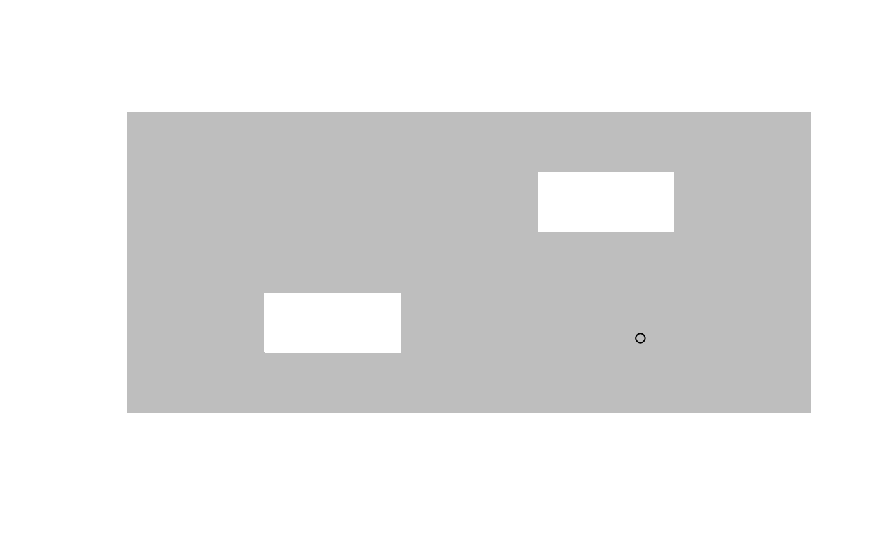

This function computes and returns the approximate pole of inaccessibility for a polygon using a quadtree-based algorithm developed by the people from Mapbox.
poi(x, y = NULL, precision = 1)
| x | a vector of x coordinates or a matrix or data.frame
of x and y coordinates, a list of components x and y,
a time series (see |
|---|---|
| y | a vector of y coordinates. Only needs to be provided if
|
| precision | the precision to use when computing the center |
Garcia-Castellanos & Lombardo, 2007. Poles of inaccessibility: A calculation algorithm for the remotest places on earth Scottish Geographical Journal, Volume 123, 3, 227-233. https://dx.doi.org/10.1080/14702540801897809
https://github.com/mapbox/polylabel
https://blog.mapbox.com/a-new-algorithm-for-finding-a-visual-center-of-a-polygon-7c77e6492fbc
A list with items
xx coordinate of the center
yy coordinate of the center
distdistance to the enclosing polygon
If there are any NA values in the input, they
will be treated as separators for multiple paths (rings) of the
polygon, mimicking the behavior of graphics::polypath().
plot_path <- function(x, y, ...) { plot.new() plot.window(range(x, na.rm = TRUE), range(y, na.rm = TRUE)) polypath(x, y, ...) } x <- c(5, 10, 10, 5, 5, 6, 6, 7, 7, 6, 8, 8, 9, 9, 8) y <- c(5, 5, 10, 10, 5, 6, 7, 7, 6, 6, 8, 9, 9, 8, 8) plot_path(x, y, col = "grey", border = NA)if (FALSE) { # Find visual centers for North Carolina counties library(sf) nc <- st_read(system.file("shape/nc.shp", package="sf")) locations = do.call(rbind, poi(nc, precision=0.01)) plot(st_geometry(nc)) points(locations) }